We will be making extensive use of likelihood for the last activity of the semester, and to prepare you this exercise will give you some hands-on experience working with likelihoods. The examples we use today are likelihood approaches to doing things you already know how to do, like estimating a mean and fitting a regression line to some data. Next week we will use the basic approach you learn today to do likelihood-based model selection.
We will work today with Excel, so that you can calculate some likelihoods by hand and get a better idea how they work. We will be using numerical approaches that give approximate values of maximum likelihood estimates. It isn't always necessary to find approximate solutions, so as an aside let's see how a likelihood function can be used to find an exact maximum likelihood estimate - that is, an analytical solution.
Analytical solutions with likelihoods
In lecture, we looked at the basic conceptual basis for finding maximum likelihood estimates - we used a likelihood function to calculate the likelihoods of a range of possible values for the parameter we are estimating, and then we picked the possible value with the greatest likelihood given the data as our parameter estimate. In many cases it's possible to derive analytical formulas that give exact maximum likelihood estimates, instead of approximations. You will see that the approximations we use are very good, but to give you an idea of how an analytical approach would work we will find the maximum likelihood estimator for the population mean, given a collection of data with values 119.42, 123.67, 124.86, 125.17, 125.3, 126.9, 126.96, 128.13, 128.31, 128.74, 130.36, 130.63, 130.78, 132.53, 135.6
| 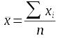
We have an analytical formula for a sample estimate of the population mean (μ) that we've always been told is the best estimate, but how do we know that's really true? |
| 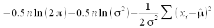
The normal log-likelihood function is shown to the left - using the normal log-likelihood means that we are assuming the data are normally distributed around μ. We are interested in finding the best value of μ̂, which is an estimate of the population mean, μ. If we define "best estimate" as the estimate that has the highest likelihood given the data, then to find the best estimate for μ we need to find the value of μ̂ that maximizes this function. |
| 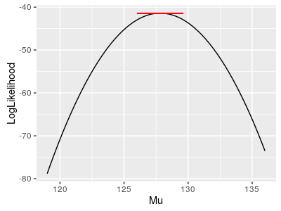 The log likelihood function for μ given the data values is graphed to the left in black. Slopes of tangent lines to the curve give the rate of change in the log likelihood with a change in μ. The red line at the top of the curve is tangent to the log likelihood at the curve's maximum, and you can see the line is flat, with a slope of 0. This means we can find the maximum of the log likelihood by finding where the slope of a tangent line is equal to 0. Slopes of tangent lines to curves are found with the first derivative of the function. Setting the first derivative to 0 allows us to solve for the value of the variable at the point on the curve where the tangent line has a slope of 0, which is at the maximum value of the likelihood function. Setting the first derivative of the log likelihood to zero and solving for μ̂ gives us a formula, which we can use as the maximum likelihood estimator for μ. |
|
You have probably learned about derivatives before in your pre-calc or calculus classes. We actually need to use partial derivatives because there is another parameter in the function, σ; partial derivatives treat variables other than the one we are solving for as though they are constants - we can find the derivative of the likelihood function using the polynomial rule, treating σ as a constant. 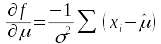Treating σ as a constant means that the first two terms in the likelihood function, -0.5 n ln(2π) and -0.5 n ln(σ2), are constants that are dropped from the first derivative. What's left is (-1/σ2)Σ(xi - μ̂). The σ2 in the denominator of -1/σ2 can't be dropped because it is being multiplied by μ̂. |
|
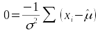Once we have the partial derivative of the likelihood function with respect to μ̂, we set it equal to 0. The partial derivative gives the slope of a tangent line at a specified value of μ̂, which we are setting to 0 - the only value of μ̂ that would give us a tangent line with a slope of 0 is the maximum likelihood estimate, so all we need to do now is to solve for μ̂. |
|
Notice that we can only make partial derivative equal 0 if the Σ(xi - μ̂) part is equal 0, so we can focus on finding the value of μ̂ that makes Σ(xi - μ̂) equal 0. 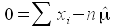Since μ̂ is repeated once for each of the n differences between xi and μ̂ within the summation, we can re-express the summation as the sum of the data values (xi) minus n times μ̂. |
| 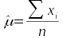
Solving for μ̂ gives us the sum of data values divided by the sample size, which is the formula for x. |
What, exactly do we learn from this? Since the μ̂ value that maximizes the likelihood function is x, we can conclude that x is the maximum likelihood estimate of μ given the data, provided that the data are normally distributed. We are justified in treating x as the best estimate we can make of μ, in the sense that it's the value of μ that is most likely to have given rise to the data.
Numerical solutions for likelihood functions
Likelihood functions don't always have analytical solutions like the one for the population mean. When analytical solutions are not available it's possible to find solutions by trying out different possible values for the parameter until the smallest possible value of the likelihood function is achieved; solutions found by trial and error are called numerical solutions.
A simplified explanation of how numerical solutions are found is: a numerical solution starts with a guess of the value of the parameter. Solutions above and below the initial guess are then checked, and if either one improves on the initial guess it is taken as a better guess at the value of the parameter. This process is repeated until values above and below are no better than the current best guess, and the current guess becomes the final numeric estimate.
The actual procedure is actually a little more complicated than this simplified explanation, and there are various methods for searching for the best estimate that are very quick and efficient, but fundamentally they all work this way. Computers are very good at doing this kind of work, and numerical methods usually arrive at correct solutions very quickly.
When we calculate the mean for a data set using Σx/n we are calculating an analytical solution, meaning that it is mathematically correct. With an analytical solution we can calculate correct estimates to as many decimal places as we want - that is, analytical solutions are correct to an arbitrary level of precision, meaning it's up to us how many decimal places to use. Numerical methods can only give approximate solutions to a fixed level of precision, but this is not really a strike against them. Experimental data does not have infinite precision, and even if we are using an analytical formula to calculate a mean we would only calculate one digit more than were recorded in the data. Provided that a numerical estimate is the same as the analytical formula to the number of digits reported, both types of estimate can be considered equally accurate.
However, there are some circumstances in which numerical method can fail to work at all, or (worse) can seem to work but give incorrect solutions, so you should be aware of conditions that can cause problems with numerical methods. Two cases you may encounter are:
- Numerical solutions can get stuck in a local maximum or minimum
- Numerical solutions may fail to find a solution at all if the likelihood function is too flat near the maximum
The first problem could conceivably cause you trouble at some point, but only if you are working with complex likelihood functions. The likelihood functions we work with today will be nice, smooth curves that only have one maximum value, and we will get solutions easily.
| 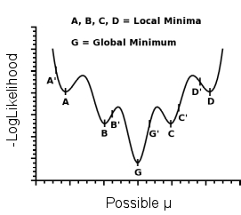
But, just for the sake of illustration, consider the example to the left. This graph shows a complex negative log-likelihood function with more than one minimum (we want the maximum likelihood, so when we use the negative log-likelihood we are looking for the minimum). The global minimum that we want to find is at G, and it is the value of μ that should be used as the maximum likelihood estimate. Numerical searches look at the values of the function at values that are slightly higher or lower than the starting point, and move in the direction that improves the estimate. For example, starting at point the possible value of μ for G', the -logLikelihood is lower for smaller values of μ but higher for larger values of μ, so a smaller value of μ is selected. This process is repeated for each new possible value of μ until the lowest value of -logLikelihood is the currently selected one, which is then reported as the estimate for μ. This works fine if we start from G', or anywhere that the downhill slope of the curve leads to G. But, if we started searching for μ at A' we could arrive at a local minimum at A instead of the global minimum at G, and we would mistakenly think we had found the maximum likelihood estimate. We would also get stuck in a local minimum if we started at B' (which would take us to B), C' (which would take us to C), or D' (which would take us to D). |
|
Avoiding local minima in numerical work is done by a) using starting values as close to the global minimum as possible, and b) using several different starting points to make sure that the same minimum is always found. The likelihood function we're working with today only has one minimum anywhere near the maximum likelihood estimates, so we won't have a problem. Just be aware of it if you go on to bigger and better things once you're done with this class. The second problem, lack of convergence on a solution, is due to the fact that we're using computers to find our estimates. Computers can only store a fixed number of decimal places for a continuous number, usually 15 decimal places. We've seen this before in R - it uses double precision floating point representation of decimal numbers, and the smallest value it can represent for continuous numbers is 2.2e-16, so when we see p-values reported as 2.2e-16 we can interpret this as "a number smaller than or equal to 2.2e-16". When it comes to finding solutions numerically this means that we can't tell that two numbers are different if they are the same to 15 decimal places. If you have a likelihood function that is so flat at the maximum value that values around it have likelihoods that are identical to 15 decimal places, the computer won't be able to tell them apart, and the function will fail to converge on a solution and will give you an error. |
| 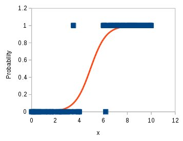
The problem is easiest to see if we use a non-linear function, like the logistic curve to the left. The logistic curve is often used to predict the probability of an outcome based on a predictor variable - for the example, we might predict the probability of catching a cold based on the number of viral particles you're exposed to, where x is the number of viral particles. The red line is the predicted probability, and the blue squares are the data points - the data are coded with a 1 indicating that the patient caught a cold, and 0 indicates that they did not. |
| 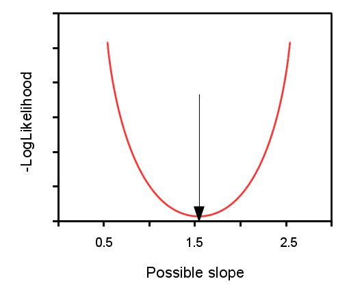
The example above shows good separation between people with or without a cold, but there is some overlap in the middle where we transition from a very low probability of getting a cold to a very high probability of getting a cold. This region of overlap has the biggest effect on the likelihood function, because it's where the residuals are biggest - changing the estimate for the slope causes a change in the likelihood function mostly because of these middle values. The negative log-likelihood function is shown the left, and thanks to the small amount of overlap in the data the likelihood function has a definite minimum, which the numerical approach would have no trouble finding. |
| 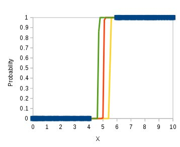
Now consider a case where we didn't get any measurements between x-values of 4 and 6 where the curve transitions from predicting values near 0 and to predicting values near 1. The separation between the infected (1) and uninfected (0) patients is perfect, so it doesn't seem as though there should be a problem - we couldn't hope for a clearer result. But, since there are no measurements between x of 4 and 6 where the shape of the curve is actually determined, multiple logistic curves fit the data nearly equally well. Provided that a curve is very flat by the time it encounters the data it will explain the data very well, and there are many curves that could do this. The three curves shown here are three out of an infinite number of curves that could describe the data nearly equally well (most of which are only very slightly different, but different nonetheless). |
| 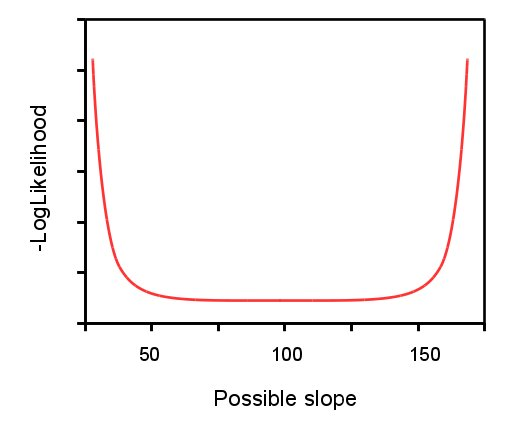
Because different possible values for the slope explain the data very well, the negative log likelihood function is nearly flat across a broad range of possible slope values. There is still a value that minimizes this function somewhere in the middle of that flat region, but it is only smaller than the values near it by a minuscule amount. If the minimum of the -logLikelihood is the same to 15 decimal places to the values around it, then the computer can't tell which is the best value. If you ever get an error message telling you that you "failed to converge" on a solution, this is a likely culprit. How to fix this? It would be necessary to measure some values along the x-axis that are currently unmeasured, between about 4 and 6, so that the best curve can be evaluated. |
Fortunately for us, general linear models tend not to have the difficulties mentioned above, and we definitely won't have any trouble getting estimates today.
Using Excel's Solver for numerical analysis
We are going to take a break from R today (and rejoicing was heard throughout the land) and will use Excel instead. R is a much better platform for working with likelihoods than Excel, and we'll go back to it in the next activity, but working with Excel is a good way to learn what likelihoods are actually about.
A brief Excel tutorial
By the way, the instructions assume that you know the basics about using cell formulas in Excel. If you need a quick tutorial, open a blank worksheet and read through the following:
- Cells that do calculations must begin with an equal sign:
- 1+2 enters the characters "1+2" into a cell
- =1+2 enters a formula, and returns the result of the formula as the numeric value "3"
- Cell functions have a name, followed by parentheses, followed by arguments (although some functions do not require arguments at all, and others have optional arguments)
- =rand() gives a random number between 0 and 1 - no arguments required
- =sum(2, 5, 8) sums the values 2, 5 and 8 and returns 15 - as many arguments as there are numbers to sum
- =normdist(5, 8, 2) returns the probability density for the value 5 for a normal distribution with a mean of 8 and a standard deviation of 2 - the function has an optional argument indicating if the function should return probability density or cumulative probability from -∞ to the value entered as the first argument. Changing the function to =normdist(5,8,2,1) returns the cumulative probability.
- It is possible to refer to cells in the worksheet by the combination of a column letter and a row number
- If you enter 1 in cell A1, and a 2 in cell A2, then =sum(A1,A2) will return the sum of these two numbers (3). Changing the number in A1 to 3 causes the formula to re-calculate and return 5.
- Cell references can be relative or absolute
- If you enter the formula =A1 in cell B1, this is interpreted by Excel as "The cell in the same row as me, but one column over". This is a relative reference, because where it points depends on where the formula is entered.
- If you copy the formula in B1 and paste it to B2 you'll see that the cell reference points to A2 now - this is because the cell in the same row, one column over is A2 when the formula is entered in cell B2.
- If you enter the formula = $A$1 in cell C1, this is interpreted by Excel as "Cell A1". The dollar signs in front of the column letter and row number anchor the reference to cell A1, and prevent the reference from changing when it is copied and pasted.
- If you copy cell C1 and paste it to C2 it will still read =$A$1
- You can mix relative and absolute references - if you enter the formula =A$1 in cell E1 then copying and pasting it elsewhere will allow the column to change to a new value if you move right or left to paste, but will prevent the row from changing if you move up or down to paste.
- Copy and paste cells - to copy and paste the contents of a cell to another cell you need to:
- Select the cell by left-clicking once - do not double-click, as this will put the cell in editing mode
- Copy the cell - right-click and select "Copy", or use the key combination CTRL+C
- Select a target cell by left-clicking once - again, do not double-click!
- Paste by right-clicking and selecting "Paste", or using CTRL-V
- Alternatively, sometimes you can copy/paste using the "fill handle", which is the black square in the lower-right corner of the selected cell. Left-clicking and dragging the fill handle copies the cell into adjacent cells. Be careful with the fill handle, though, because it does more than just copy/paste, depending on the contents of the cell - for example, if you enter 1/1/2018 as a date and then use the fill handle you will see the next cell has the value 1/2/2018. Instead of copying the value 1/1/2018 Excel recognized this as a date and increased the day by 1 when you used the fill handle - this is the default behavior for the fill handle when the cell contents are dates.
The spreadsheet you'll need for this exercise is here. Download it to your computer and open it in Excel.
In the worksheet EstimateMean, you'll find 15 data points in column A, labeled "Data". We'll start by setting up this worksheet to calculate the likelihood of each data point, given an initial guess at the estimate of the mean of 127 and of the standard deviation of 3.95.
We will be using Excel's tool for finding numerical solutions, called the Solver. Solver needs several things to work properly:
- An objective cell - this is a single cell in the spreadsheet containing a spreadsheet formula that depends on one or more values we wish to estimate. We also need to tell Solver whether we want the value of the objective cell to be:
- Maximized - in which case values of the estimates will be found that make the objective as big as possible.
- Minimized - in which case values of the estimates will be found that make the objective as small as possible.
- Set to a specified target value - in which case values of the estimates will be found that make the objective equal the value we specify.
- One or more cells to change. These are the cells that contain the parameters we want to estimate. Our parameters have to be used, directly or indirectly, in the formula for the objective cell. We can specify as many cells to change as we want.
We will set up likelihood functions for the residuals between our data values and our estimates, and then use Solver to maximize the likelihood function by changing the estimated values. The values of the estimates that maximize the likelihood function will thus be our maximum likelihood estimates.
Maximum likelihood estimation of the mean
1. Set up some column labels, and enter the initial guesses for mean
and standard deviation, like so:
-
In the first row of column B, type "Likelihood".
-
In cell A19 type the word "Mean", and in B19 type 127.
-
In cell A20 type the word "StDev", and in cell B20 type "3.95". Your sheet should look like this.
{kind=link}
2. Calculate the likelihoods of the first data point. Into cell B2 type the function:
=normdist(a2, b$19, b$20, 0)
This function gives the normal probability for a number (a2) with a specified mean (b$19) and standard deviation (b$20). The last argument, 0, indicates that this is not a cumulative probability, but rather a probability density at the data value specified.
Recall that we can use probability distributions as likelihood functions, so even though the normdist() function is calculating probability densities, we can use it as a likelihood function instead - cell B2 is thus the likelihood of a mean of 127 given the known data value of 119.42.
3. Now you can calculate the likelihoods of the remaining data points. Copy cell B2, and paste it to B3 through B16. Since the formula used absolute cell references (i.e. dollar signs before the row numbers) for the mean (in B$19) and standard deviation in (B$20) but used a relative reference (A2) for the data value, each formula in B2 through B16 uses the same mean and standard deviation, but points to the data value in its own row. Consequently, you now have normal likelihoods for the estimate of the mean and standard deviation for every data value in the sample.
As you scan through the likelihoods you just calculated, you'll see that some are bigger than others. Data values that are near this initial guess of 127 give high likelihoods, while values far from 127 give low ones.
4. You can now calculate the likelihood of the mean and standard deviation given all 15 of the data points. In cell A22 type "Overall likelihood", and in B22 type:
=product(b2:b16)
Likelihoods are combined by multiplying them, and the function "product" multiplies all the values from B2-B16 together. Since the individual likelihoods are values between 0 and 1, the largest of which is 0.1, the product across these 15 values is very small (on the order of 10-19). Make a note of the mean and its likelihood in your worksheet.
5. To get a feeling for how the maximum likelihood will be found, change the value of the mean in cell b19 to other possible values.
-
Set the mean in b19 to 119.42, which is the value of the first data point (they are sorted in order, so this is also the smallest number). You'll see the likelihood of this possible value of the mean is high judged by the first data point, but for most of the rest of the data points it is less likely than 127 was, and you'll see that the overall likelihood in cell B22 gets smaller.
-
Set the mean in b19 to 135.61 (the value of the largest data point), and you'll see the likelihoods change again, with the last data point indicating high likelihood. As with the value of 119.42, only a couple of data points give a higher likelihood to 135.61 than to 127, and the overall likelihood given the entire data set is lower than for the value of 127.
You can set the mean in b19 back to 127 - this is a good starting point because it is near the middle of the data.
6. Working with these tiny numbers makes it more likely that we'll run into numeric problems, so we usually want to work with likelihoods on a log scale. Using the negative of the log likelihood is a convenience - it prevents us from having to interpret the relative sizes of negative numbers. In this step we will calculate the negative log-likelihoods for each data value, and then combine them by summing them (remember: multiplication on a linear scale is addition on a log scale).
Label column C "-LogLikelihood" (you'll need the quotes or Excel will think the negative sign is part of a formula and give you an error message), and in cell C2 type:
=-ln(b2)
You can now copy and paste this equation to cells C3-C16.
In cell A23 write "Overall -LogLikelihood", and in cell B23 type:
=sum(C2:C16).
You should get a value of 41.724 (to three decimal places).
7. Now it's time to find the best value for the mean. We have plugged in three arbitrary values for the mean - 127, 119.42, and 135.61 - to see how different possible values of the mean changes the likelihoods. To find the best possible value of the mean we will use Excel's Solver plug-in to conduct this search using formal numerical analysis methods.
Switch to the Data tab and see if you have a Solver button on the far right - it looks like 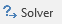. If not, you will need to turn it on:
- Go to the "File" tab in the upper left corner of Excel, and select the "Options" near the bottom of the list on the left.
- In the window that pops up, select the "Add-Ins" option out of the list, and click on the "Go..." button next to "Manage: Excel Add-ins".
- Click on the check-box next to the "Solver Add-in", and click "OK".
If you now click on the "Data" tab, you should see "Solver" as one of the data analysis options.
To run Solver:
- Click the "Solver" button in the "Data" tab.
- Use the following settings:
- Enter $B$23 into the "Set Objective" box - this is the negative log likelihood.
- Click on the "Min" option so that we will minimize the negative log-likelihood in cell B23 (minimizing the negative log-likelihood maximizes the likelihood).
- Enter $B$19 as "By Changing Cells:". We are only estimating the mean this time, so don't include the cell with the standard deviation here.
- Check the box for "Make unconstrained variables non-negative". This means that Solver only needs to consider non-negative numbers as possible solutions. We don't need to consider a negative value for the mean, if the data can't possibly have negative values.
- You are now set to find the value of the mean in B19 that makes the sum of the negative log-likelihoods as small as possible (it should look like this).
- Click "Solve" to run. When Solver has found a solution, select "OK" to keep it.
{kind=link}
For comparison, in cell C19 type =average(A2:A16). The analytical solution provided by average() should match Solver's estimate out to six or more decimal places. With only two decimal points recorded in the data, if they are the same to three decimal points then they are identical at the level of precision you require.
The take-home message being, numerically minimizing a negative log-likelihood to find an estimate for a parameter works.
Now that you have a basic idea of what likelihoods are, and how they can be used, we will use likelihood to find the best-fit line through a data set.
Maximum likelihood estimation of the slope and intercept of a regression line
The next step is to use this approach to estimate the slope (β) and intercept (α) of a linear regression model. The log likelihood function looks like this:
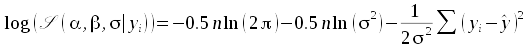
The cursive L is the symbol for likelihood. The parameters we are estimating are on the left side of the vertical line, meaning they are unknowns, and the data values (yi) are on the right side of the vertical line, meaning that the data values are known. The log-likelihood function has terms for the sample size (n), the variance (σ2), the predicted value of y (ŷ), and the data values (yi).
Notice that two of the parameters we want to estimate, β and α, don't seem to be in the likelihood function. This is because we won't be maximizing the likelihood of β or α individually - instead, we will be maximizing the likelihood of the linear regression model as a whole. The likelihoods we calculate will be based on the residuals, which are the differences between data values and predicted values (yi - ŷ). The predicted values (ŷ) come from the linear regression model, which has a slope of β and an intercept of α. When Solver changes the possible value of β and α it causes the predicted values to change, which will change the likelihood. Values for slope and intercept that maximize the likelihood across the full set of data will be our estimates of β and α.
The other parameter in the log likelihood that we need to be concerned with is σ, the standard deviation of the residuals - in addition to the slope and intercept parameters we can change the value of σ, so that we can estimate the standard deviation of the residuals along with our estimates of slope and intercept.
1. Switch to the sheet "Regression". You'll see a set of data, labeled y and x. I've labeled columns C for "Predicted values", D for "Likelihood", and E for "-LogLikelihood". Below, in rows 20-23 of Column B are initial values for the slope, intercept, and standard deviation of the residuals. We don't have a mean this time, because we are going to use the regression equation to predict the mean at each x value using the slope and intercept.
2. To calculate the predicted values, type into C2:
=b$20*b2 + b$21
Copy and paste this formula to C3 through C17. These are the predicted means for y from a straight line with a slope of 1 and an intercept of 8.755. You'll see the predictions are terrible - never fear, we know these are not good estimates, we just need to specify starting values to give the Solver something to modify.
3. To calculate the likelihoods for each data point, type into D2:
=normdist(a2, c2, b$23, 0)
This gives the likelihood for a mean equal to the predicted value (in c2) given the data value (in a2), with a standard deviation of the residuals specified in b$23. We didn't need to calculate a residual because normdist() does it for us - it uses the difference between the data value in a2 and the mean in c2 (i.e. the residual) to calculate a normal probability.
Copy and paste this formula from D2 to D3 through D17.
4. Now, convert the likelihoods to negative log-likelihoods. In cell E2 type:
=-ln(d2)
Make sure you include the negative sign before the ln(). Copy this into E3 through E17.
To get the negative log-likelihoods for the model given the entire set of data, we just need to sum these values - in cell B25 type:
=sum(e2:e17)
If everything went as planned this number is 1393 - if not, go back and
check your cell formulas.
5. You can now use Solver to find the best values for the slope, intercept, and standard deviation of the residuals.
Start up the Solver, and use the settings:
- Use B25 as the objective (the sum of the negative log likelihoods)
- Minimize the objective cell
- Use B20, B21, and B23 as the cells to change.
- Do not make unconstrained variables non-negative.
- The Solver should look like this. Click "Solve", and then accept the solution.
{kind=link}
If all went well you should have a slope of 0.228 and an intercept of 5.788.
You can compare the solutions to what you would get by fitting a linear regression by typing into C20 and C21:
=slope(a2:a17, b2:b17)
=intercept(a2:a17, b2:b17)
These are the usual estimates of slope and intercept for a linear regression based on analytical formulas, and they should match the maximum likelihood estimates...this means that the analytical formulas for slope and intercept are the maximum likelihood estimates.
Stop and think for a moment about what we did - we were able to get accurate estimates of slope and intercept by maximizing the likelihood of the model given the data. We were able to get these estimates without specifying a formula for slope or a formula for intercept, and without having to specify a separate likelihood function for each parameter we estimated. Maximum likelihood is a popular method for estimating parameters of a model fitted to data because of this.
Hypothesis testing with likelihood - comparing two nested models with a likelihood ratio test
The other major application of likelihood you will work with now is hypothesis testing. Although the goal is to obtain a p-value for a hypothesis, we will be using models as hypotheses rather than some null value for a parameter. Our focus will be on whether there is a statistically significant change in the likelihood of a model given the data when we drop a term from the model - if so, we would have evidence that the more complex model with the term included is a better hypothesis about the nature of the relationship between the predictors and the response than is the less complex model that omits the term.
To use this approach, we need to fit two different models to the data and then compare their likelihoods. We have a simple linear regression now, so we will fit a more complex model, with a quadratic term, and see if this significantly improves the fit of the model to the data. To use this approach we need to use the same set of y data for both models, and the more complex model has to have everything that's included in the simpler model - that is, the simpler model has to be nested within the more complex model.
1. Switch to the "Quadratic" tab. You'll see that the data are the same as on the "Regression" tab, and the layout of the column names and coefficients is very similar, except for a couple of things:
- Now we have a coefficient labeled "Linear" (instead of "Slope") to represent the linear term.
- We have an additional coefficient for the quadratic term (that is, the value multiplied by x2) labeled "Quadratic".
- The intercept is still labeled "Intercept", and the standard deviation of the residuals is still "StDev of residuals".
We will have Solver minimize the negative log likelihood by changing all three of the model coefficients in B20 through B22, as well as the standard deviation of the residuals in cell B24.
To make the task of finding the estimates easier for Solver, we're starting with the slope, intercept, and standard deviations of the residuals set to the values Solver found for the simple linear regression - since these values put the line through the data, starting with them will get us close to the final solution. We can use an initial guess for the quadratic term of 0, which means that initially the predicted values will be the same as the Regression tab - if Solver finds changing the quadratic coefficient improves the fit, then the predicted values will change.
Calculate the predicted values (starting in cell c2) using the formula:
=B$21*B2^2+B$20*B2+B$22
This adds a squared (quadratic) term to the predicted value, using the coefficient in b21 multiplied by b2 squared.
Once you have predicted values for every data value, you can calculate the likelihoods, and the -log-likelihoods as before. Put the sum of the negative log-likelihoods in cell B26, and you're ready to use Solver to estimate the coefficients.
Initially the coefficient for the quadratic term in cell B21 is set to 0, so the numbers should all be the same as your Regression sheet - the "Linear" coefficient should match the slope on the Regression sheet, the Intercept should be the same, as is the standard deviation of the residuals. The -LogLikelihood should also be the same.
But, now we will allow Solver to change the quadratic coefficient to be non-zero, and we'll see if we can get the -LogLikelihood even smaller than we got with our linear regression.
2. Use Solver with the settings:
- The negative log-likelihood in B26 is the objective cell, and it should be minimized.
- Changing the values of B20:B22, B24.
- Un-check the box that says "Make unconstrained variables non-negative" - we want Solver to be able to try out negative coefficients.
If all goes well the -LogLikelihood should be equal to 12 - smaller than we got with just a linear regression.
3. Now you have negative log-likelihoods for two nested models, so we can test for a difference between them using a likelihood ratio test.
In cell A28 of the Quadratic sheet enter "Test of quadratic vs. linear".
In cell A30 of the Quadratic sheet, type "Chisquare", and in B30 type:
=2*(Regression!B25 - Quadratic!B26)
This will give you twice the differences in the negative log-likelihoods, which is the Chi-square test statistic - it should be equal to 3.084. Chi-square values have to be positive, so if you do the subtraction out of order, take the negative of this difference as your Chi-square statistic.
In cell A31 type "p", and in B31 type:
=chidist(B30,1)
This function gives probabilities from the Chi-square distribution. The first argument is the Chi-square test statistic you calculated in cell B30, and the second argument it the degrees of freedom. The quadratic model has three coefficients and the regression model has two, for a difference of 1, so the degrees of freedom is 1.
You'll see that adding the quadratic term didn't give us a significant change in the log-likelihoods of the models, so we wouldn't consider the quadratic term to be significant.
Is the best-supported hypothesis any good at all?
Note that our likelihood ratio test gave us a comparison of two models, simple linear regression and quadratic regression, that don't differ significantly. The ratio of likelihoods for two models is a measure called support - if we put the more complex model in the numerator we are measuring how much more support there is in the data for the more complex model relative to the less complex model. We could generate a Chi-square test of significance by using negative twice the likelihood ratio as a Chi-square test statistic. The likelihood ratio test you just completed told you that there is not enough support in the data for adding a quadratic term to the model, and with that result you would prefer the linear model as the best one for your data.
But, the likelihood ratio test bypassed the step of testing if the simple linear regression is significant - that is, our likelihood ratio test told us that there isn't enough support for a quadratic term to include it, but it didn't tell us if there is support for the notion that y depends on x in the first place.
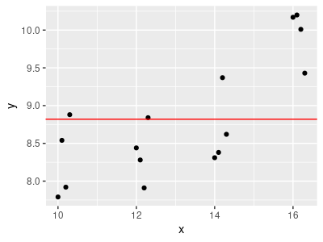A model-based approach to asking this question is to fit an intercept only model to the data. A model that only has an intercept hypothesizes no relationship between y and x at all - or, if you prefer, it hypothesizes a flat line with a slope of 0. Our null flat line gives us a predicted value of the mean of y for any value of x, including when x is equal to 0. The definition of the predicted value of y when x is equal to 0 is the intercept.
So, an "intercept only" model is the model of a flat line, and thus represents our null hypothesis.
If we calculate the likelihood of this intercept only model, then we could compare it to the linear regression model using a likelihood ratio test, and if there is a significant difference in likelihood we could conclude that there is support for the hypothesis that y depends on x (i.e. we need the slope to explain the data).
1. In the Quadratic sheet, enter "Intercept only -LogLik" into cell A33.
In cell B33 enter the formula (note the negative sign in front of the sum):
=-sum(ln(normdist(a2:a17, average(a2:a17), stdev(a2:a17), 0)))
and hold down CTRL+SHIFT as you hit ENTER to make it an array formula (if you did it right you should get a value of 18.34317..). If you get an error message, #VALUE, then click into formula bar to get into edit mode and try again.
Array formulas can apply an Excel function to a range of cells, one at a time. This formula is calculating the normal probabilities for the data in A2 through A17 one at a time, using the average and standard deviation of the data in those cells, calculating the natural log of each, summing them, and then multiplying by -1. This is thus the negative log-likelihood of a model using only the mean of the y data. Note that we're using average() and stdev() instead of using Solver to estimate these parameters - we know that the mean is a maximum likelihood estimator, so to save some time we'll take this shortcut.
2. In cell A35 enter "Test of linear vs. intercept only". To get the likelihood ratio test for linear regression vs. intercept only:
- In cell A37 enter "Chisquare".
- In B37 enter =2*(Quadratic!B33-Regression!B25). This is the Chi-square test statistic for the difference in likelihoods between linear and intercept only models, and should equal 9.6.
- In cell A38 enter "p", and in B38 enter =chidist(b37, 1). Like the comparison of linear to quadratic regression, the intercept only model has one fewer coefficients than the linear regression (i.e. no slope for intercept only), so the degrees of freedom is 1.
You'll see that the p-value is less than 0.05, which means that
including a slope in the model is well supported - we get a
significantly higher likelihood for a model that includes a slope than
one that does not.
For your assignment, upload the spreadsheet to Cougar Courses.